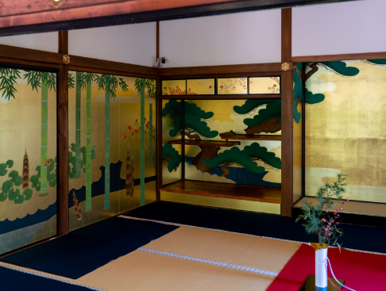
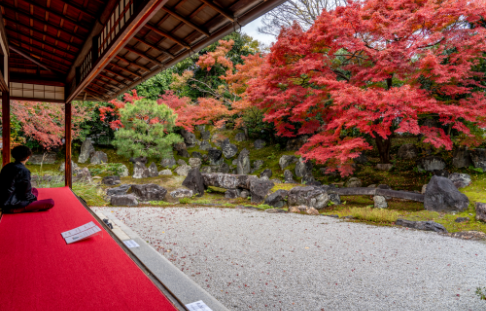
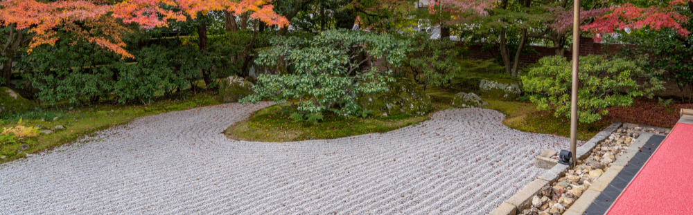

「唐門」
幸せを共有する
空間を生む「圓徳院」
entoku-in
ねねの温もりが
今も眠る場所
「唐門から方丈までの道」
圓徳院は、豊臣秀吉の妻である北政所ねねの終焉の地です。
ねねは、秀吉の没後、出家をし「高台院」という名を天皇から授かりました。それを機に、夫である秀吉の冥福を祈り、供養を行うために徳川家康の協力もと高台寺を建立しました。
その後1605年、ねねが秀吉との思い出深い、伏見城の化粧御殿とその前庭を境内に移築して移り住んだのが圓徳院で、そこから高台寺へ通っていたことから、圓徳院の前にある小道は「ねねの道」と呼ばれています。ねねにこうした秀吉への強い思いがあるのは、当時では珍しい恋愛結婚で結ばれたからでしょう。
そして、ねねが77歳で没するまでの19年間を圓徳院で過ごす間、親しみやすい人柄からか彼女を慕って多くの公家や大名夫人、文化人が訪れていました。
時代を象徴する
豪華な襖絵

「雪月花の襖絵」
圓徳院の部屋には、金色の派手な松・竹・梅や雪・月・花を描いた襖絵や、白い龍の襖絵が飾られています。これらは、農民から武士へと成り上がり、日本の天下統一を果たした秀吉の生き様と、秀吉が好んだ派手な文化を表現しています。
約400年前の水墨で描かれた樹木の襖絵も展示されているのですが、これは、安土桃山時代を代表する絵師である長谷川等伯の作品で、彼は秀吉から重用されていたと言われています。
現代では、これほどの大きい作品を手掛けることができる人が少なくなり、襖絵は非常に貴重な美術品となっています。
秀吉とねねを
表現する庭園

「北庭」
圓徳院のみどころは境内にある2つの庭園で、特に秋には紅葉が庭園を彩り美しい風景を作り出します。
北庭は、秀吉が築いた伏見城にあったねねの化粧御殿の前庭を移したものであり、当時の姿をほぼそのままに留め、安土桃山時代の代表的な庭園の一つとして、日本の名勝指定も受けています。北庭の特徴は、中央に置かれた多数の巨石で、その荒々しさから秀吉の豪快さが伝わってきます。
それに対して、南庭はねね好みの造りで、巨石は隅に配置され、1年を通して花が見られるようになっており、秀吉を側で支えたねねの優美さを伺い知ることができます。
北庭を眺めるお部屋では、抹茶が振る舞われていますので、ゆっくり座って抹茶を味わいながら思いを馳せる時間にしてみてはいかがでしょうか。
また、抹茶を点てる様子を見ることもでき、秀吉を喜ばせた400年前のおもてなしを受けることができます。
華やかな空間で生まれる
幸せ

「南庭」
圓徳院のある東山地区は、京都観光の中心地としてよく知られており、江戸時代から旅行者をもてなしていた観光地として非常に歴史の長い場所です。そのなかでも、珍しくひときわ華やかな空間にするように圓徳院が心掛けているのは、豪華絢爛なものを好んだ秀吉を祀っているためです。
また、圓徳院は、訪れる人々が国籍問わず、コミュニュケーションが生まれる場所となることも大事にしています。時代の流れによって変わりゆく人々が追求するものを、理解、模索に努め、訪れる人々にとって幸福を感じる場所になるようにと強い願いを込められています。
圓徳院
営業時間：6:00〜17:00
公式HP：http://www.kodaiji.com/entoku-in/pdf/entokuin_e.pdf
〒605-0825
京都市東山区下河原町530
最寄り駅：地下鉄「東西線東山駅｣下車 徒歩5分
最寄りのバス停：京都市「神宮道」下車 徒歩3分
入場料：大人500円 中高生400円 小学生200円